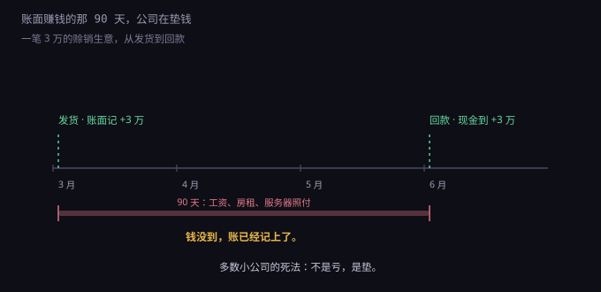
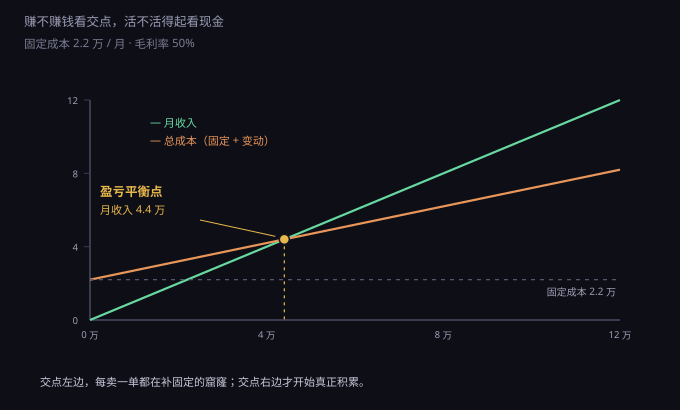
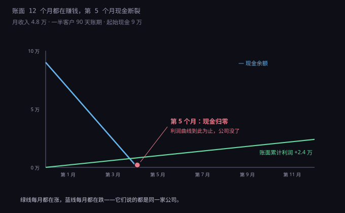

约 0.33 万字 · 3 张图 · 账面十二个月都在赚钱的公司，第五个月没钱发工资
会计上有三张表：资产负债表、利润表、现金流量表。 前两张讲的是"你有没有钱"，第三张讲的是"钱去哪了"。 小公司死，几乎都死在第三张。
为什么它们会不一样？因为收入不等于收到钱，成本不等于付了钱。
你给客户发了一批货，合同签了、发票开了， 会计上这个月就确认了三万收入——尽管客户说三个月后付款。 你的利润表上多三万，银行账户里一分没多。
反过来，你年付了一万二的服务器， 钱这个月就出去了， 但会计上要分摊到十二个月，每个月只算一千的成本。 这个月你的现金少了一万二，利润表上只少一千。
两个方向相反的错位叠在一起， 就是所有现金流事故的来源： 你在为已经确认但还没收到的收入，垫付已经发生但还没入账的成本。
一笔三万的赊销订单，会留下四个时间点。

第一个点，3 月 1 日发货。 这时候收入确认了，利润表上多三万。 钱一分没到。
第二个点，3 月 15 日发工资。 真金白银出去一万六。 这笔钱和你手上那一单没有任何关系—— 就算这个月一单没签，工资照发。
第三个点，3 月底交房租、付服务器。 又是三千。
第四个点，6 月 1 日客户付款。 三万终于到账。 但这两个月里，你已经自己垫进去两万多。
这就是"垫资"。它不是亏损，是一种时间上的错位： 你的钱先出去了，别人的钱后进来， 中间这段由你承担。
生意的规模越大，垫的越多。 一个月做三万，垫两万； 一个月做三十万，垫二十万。 增长本身是要花钱买的。
固定成本的定义很简单： 不管这个月做不做生意，都得付的钱。
一个两人的小公司，一个月的固定成本大概是这样：
| 项目 | 金额（元/月） | 能不能砍 |
|---|---|---|
| 工资（2 人 × 8000） | 16000 | 裁员要付 N+1 |
| 社保（最低基数） | 2800 | 不能 |
| 房租 / 工位 | 2000 | 合同期内不能 |
| 云服务、软件订阅 | 1000 | 年付的不能，月付的可以 |
| 代账 | 300 | 能换更便宜的 |
| 合计 | 22100 |
两万二。注意这个数字的性质： 它是每个月一号就欠下的，和你这个月干了什么无关。
固定成本最可怕的地方不在金额，在刚性—— 加的时候很容易，减的时候极难。
招一个人，聊两次就定了； 裁一个人，要付 N+1 的补偿， 还可能影响剩下的人。 签一个办公室，一年起租； 云服务年付，退不了。
所以固定成本有一条铁律： 能不固定就不固定。 能用外包就不用全职，能用月付就不用年付， 能用共享工位就不租独立办公室。 不是为了省那点钱，是为了保住"随时能缩"的能力。
变动成本是跟着业务量走的： 卖一件货，进一件货；多一个用户，多一份带宽。 不做生意，它归零。
这东西在困难时期是救命的。 收入掉一半，变动成本也跟着掉一半， 亏损只是缩小，不会突然放大。
而固定成本是反的： 收入掉一半，它一分不少。 原来赚两千，现在倒亏一万。
云计算之所以改变了创业的成本结构， 核心就在这里： 它把"买服务器"这个固定成本，变成了"按用量付费"的变动成本。 十年前做网站要先买一台机器，现在月付几十块，做不下去就停。
但要注意，云服务里也有"伪变动成本"： 包年包月的实例、预留实例、承诺消费的折扣， 这些一旦签了，就变成固定成本了。 折扣是用灵活性换的，账要算清楚。
知道了固定成本和毛利率，就能算出"要卖多少才不亏"。

图里两条线：绿线是收入，橙线是总成本。 橙线不从零开始，它从 2.2 万起步—— 那就是固定成本，一单不做也要付。
两条线的交点是盈亏平衡点。算法很简单：
平衡收入 = 固定成本 ÷ 毛利率 = 2.2 万 ÷ 50% = 4.4 万
这个公式值得记住，它能回答很多实际问题。 比如：招一个人要多少业绩才能覆盖？ 一个人综合成本按一万算，毛利率 50%， 那就是要多做两万收入。
再比如：降价促销划不划算？ 毛利率从 50% 降到 30%，平衡点从 4.4 万涨到 7.3 万。 也就是说，打八折促销，销量得涨 66% 才不亏。
还有个更隐蔽的推论： 毛利率越低，固定成本越致命。 做贸易的公司毛利率 15%，2.2 万的固定成本要卖 14.7 万才平衡； 做软件的公司毛利率 80%，只要卖 2.75 万。 同样两万二的固定支出，压在前者身上是山，压在后者身上是石头。
盈亏平衡点回答"要卖多少"，跑道回答"还能撑多久"。

算法是一条式子：
跑道（月）= 账上现金 ÷ 每月净流出
图里这家公司，月收入 4.8 万，成本 4.6 万， 账面每月赚两千。听起来还行。
但一半客户是 90 天账期。 所以每个月实际收到的现金只有 2.4 万， 而要付出去 4.6 万。 每月净流出 2.2 万。
账上 9 万，除以 2.2，是 4.09 个月。 第五个月，工资发不出来。
而利润表上，这家公司十二个月都在赚钱。 它甚至可以说"我们今年盈利两万四"—— 在破产清算的那天。
这就是"被拖死"的准确含义： 不是一刀砍死，是每个月流一点血， 流到某一天，你发现自己付不起明天的账。
这是最反直觉的一条，也是最多人栽跟头的地方。
假设你月收入 10 万，客户账期 90 天。 那么你手上永远挂着三个月的应收，也就是 30 万。 这 30 万是你的钱，但不在你账上。
现在业务涨了 50%，月收入变成 15 万。 听起来是好事。但应收余额也跟着变成 45 万—— 你凭空多垫了 15 万。
你的利润表更好看了，你的银行账户更空了。 扩张越快，垫得越多； 垫得越多，越需要借钱； 借钱要付利息，利息又吃掉利润。
很多公司就是在这个循环里断掉的： 订单来了，不敢不接； 接了要垫钱，只能借； 借了要还，只能接更多订单。 最后被自己的订单压死。
所以有一条判断： 如果一门生意的应收周期比应付周期长，它就天然缺钱。 你三个月后才收到钱，供应商却要你月结—— 这中间的缺口，只能靠自有资金或者贷款填。
反过来，能先收钱后付货的生意（预付费、会员、订阅）， 现金流天然是正的。这也是为什么 所有做软件的公司都想尽办法让你年付。
公司快没钱的时候，本能反应是砍成本。 这个动作本身没错，但很容易踩进一个正反馈。
第一步，收入下降。 可能是大客户走了，可能是行业淡季。
第二步，现金紧张。 固定成本不动，收入少了，净流出扩大。
第三步，砍成本。 先砍市场费用，再砍人。
第四步，服务质量下降。 人少了，响应变慢，bug 修得慢， 客户开始抱怨。
第五步，客户流失。 抱怨的客户不续约，收入再降一截。 回到第一步。
转一圈，公司小一号；再转一圈，再小一号。 每一圈都比上一圈更快，因为固定成本没跟着缩， 而收入在缩。
打破这个循环的只有一个动作： 在收入下降 10% 的时候就动手，而不是等到 30%。 10% 的时候还有牌可打，30% 的时候只能砍人， 砍完就进螺旋了。
第一个，年付省 20%。 一万二的年费，年付打八折省两千四。 听起来划算。但如果你第六个月就撑不住了， 剩下六千块是退不回来的。 早期公司的现金比折扣值钱得多， 宁可月付多花点，也要保住那一笔能救命的流动资金。
第二个，先招人再找活。 "反正要扩张，先把团队搭起来。" 人一到位，固定成本立刻涨， 而收入要三个月后才来。 这三个月就是纯烧钱， 烧完如果活没来，就要裁—— 裁的时候还要付 N+1。
第三个，接大公司的单。 大公司付款流程长，账期 90 天到 180 天很常见， 还要先开票、验收、走审批。 你的利润率可能是 20%， 但你要垫 100% 的成本。 接一单这样的生意，等于给客户提供了一笔无息贷款。 规模大的时候，这是在替银行干活。
三个陷阱的共同点： 它们都在优化利润表，同时恶化现金流。 而小公司先死的永远是现金流。
一、记现金账，别记利润账。 每天或每周只做一件事：看银行余额， 和三个月前的同一天比。 下降了，就要知道为什么。 利润表是给税务局和投资人看的， 银行余额是给你自己看的。
二、能预付就预付。 给客户年付折扣、首付 50%、 按阶段收款，都是把未来的钱挪到现在。 这不是催款技巧，是生存技巧。
三、把固定成本往变动成本上推。 能外包的不招人，能月付的不年付， 能共享的不独租，能按量的不包月。 目的不是省钱，是保留收缩的能力。
四、留六个月跑道。 账上的钱要能覆盖六个月的净流出。 低于三个月，就该停止一切非必要支出， 包括招人、投放、装修。
五、算清楚"最坏情况"。 问自己一句：如果下个月收入归零， 我能撑几个月？ 这个数字就是你的抗风险能力。 它比任何增长率都重要。
这五条没有一条需要会计知识， 它们需要的只是每周看一次那个数字。 大多数公司不是不会算，是没看。
你可能不做公司，只是自己搞一个网站、一个小工具。 这套逻辑一样适用。
你的"固定成本"是服务器月费、域名年费、 各种订阅的软件、对象存储的保底费用。 加起来可能一百块，也可能一千块。
这些钱每个月都在流出去，而收入可能是零。 那就是纯粹的净流出。 一百块一个月，一年也是一千二。
更该注意的是"注意力成本"： 一个没人用的项目，你会不断投入时间去维护它、 修它、想它。 这部分不进账本，但它比服务器费贵得多。
所以给个人项目一个判断标准： 这个项目每个月给我带来的东西（钱、技能、用户、乐趣）， 值不值它的月成本加上维护时间？ 不值就停掉，把服务器释放，把域名留着。
停掉一个项目不丢人。 一直往里填钱、又不肯承认它不行，才是真正的成本。